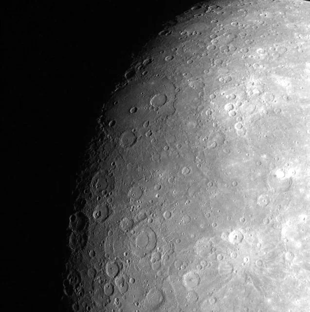
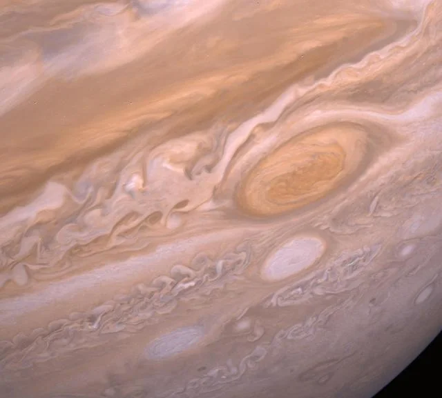

Osservare il cielo significa soprattutto imparare a riconoscere cambiamenti lenti: il percorso della Luna, il ritorno delle costellazioni, la luce ferma dei pianeti e il movimento apparente della volta celeste. La prima regola è semplice: guardare più volte, non una sola.
1. Trova più buio possibile
Le luci artificiali riducono il contrasto e cancellano le stelle più deboli. Non è sempre necessario raggiungere una montagna isolata: spesso basta allontanarsi da lampioni diretti, terrazzi illuminati e vetrine.
Dopo essere arrivato in un luogo buio, concedi agli occhi almeno venti minuti per adattarsi. Evita di controllare continuamente lo schermo del telefono o usa una modalità con luce rossa e luminosità minima.
2. Parti dalla Luna
La Luna è l'oggetto più facile da trovare e uno dei più interessanti. Osservala in fasi diverse: vicino al primo o all'ultimo quarto, le ombre lungo il terminatore rendono più visibili crateri, montagne e pianure.

3. Impara pochi riferimenti
Non cercare di memorizzare tutto il cielo. Inizia con due o tre costellazioni stagionali e con un punto stabile come la Stella Polare. Da questi riferimenti diventa più semplice orientarsi e raggiungere altri oggetti.
4. Riconosci i pianeti
I pianeti più luminosi possono sembrare stelle molto brillanti, ma spesso scintillano meno. Venere domina il cielo poco dopo il tramonto o prima dell'alba; Giove appare come un punto molto luminoso; Saturno richiede un piccolo telescopio per mostrare chiaramente gli anelli.

5. Scegli il primo strumento con calma
Un binocolo 7×50 o 10×50 può essere un ottimo inizio: è intuitivo, trasportabile e permette di esplorare ampie porzioni di cielo. Un telescopio economico ma instabile può invece rendere l'esperienza frustrante.
6. Tieni un diario
Annota data, luogo, condizioni del cielo e oggetti osservati. Anche brevi note aiutano a costruire familiarità e a confrontare ciò che cambia nel tempo.